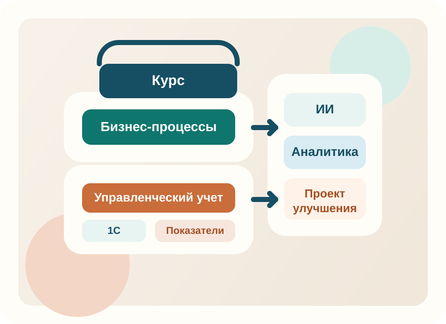
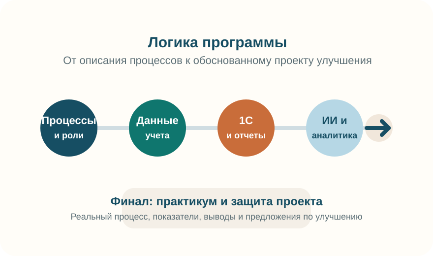

Проект учебной программы
Цифровая аналитика и улучшение бизнес-процессов в управленческом учете
Междисциплинарный курс, ориентированный на формирование у обучающихся практических навыков анализа процессов, интерпретации данных управленческого учета, работы в среде 1С и применения инструментов искусственного интеллекта.
Профиль
Управленческий учет, аналитика процессов, цифровые инструменты, 1С и ИИ.
Назначение
Для согласования, витрины программы и быстрого формирования печатной версии.

Подготовка специалиста, который способен читать цифры, понимать логику процесса и предлагать управленческие улучшения.
Отчет, регламент, дашборд или проект совершенствования выбранного процесса.
Позиционирование
Программа не сводится к изучению одной платформы или одного инструмента
Курс объединяет процессный подход, инструменты управленческого учета, прикладную работу в 1С и современные цифровые средства анализа, включая искусственный интеллект. Благодаря этому программа может быть представлена как академически выверенная и одновременно прикладная.
Основной образовательный результат состоит в подготовке слушателя, способного выявлять проблемы процесса, интерпретировать показатели и формулировать предложения по улучшению на основе данных.
Архитектура программы

Для кого курс
Целевая аудитория программы
Курс может быть адаптирован под высшее образование, дополнительное профессиональное образование и корпоративный контур обучения.
Студенты экономических и управленческих направлений
Для формирования прикладного представления о связи процессов, данных учета, аналитики и управленческих решений.
Слушатели программ ДПО
Для повышения квалификации в области цифровой аналитики, 1С и применения ИИ в рабочей практике.
Специалисты, работающие с данными и регламентами
Для сотрудников, вовлеченных в учет, описание процессов, автоматизацию и подготовку управленческой отчетности.
Цель и результаты
Формулировки, подходящие для учебного паспорта и согласования
Цель программы
Формирование у обучающихся комплекса практических компетенций в области анализа бизнес-процессов, интерпретации данных управленческого учета, использования системы 1С для решения прикладных задач и применения инструментов искусственного интеллекта в аналитической деятельности.
Планируемый результат
По завершении курса обучающийся способен выполнять описание и анализ процессов, интерпретировать учетные показатели, выявлять проблемные зоны, формулировать предложения по совершенствованию и представлять результат в формате аналитического или проектного документа.
Результаты обучения
Компетенции, заявляемые в описании дисциплины
Описывать и анализировать бизнес-процессы организации с учетом их целей, участников и контрольных точек.
Выявлять риски, потери, отклонения и узкие места в текущей организации процесса.
Использовать данные управленческого учета для оценки эффективности процессов и подразделений.
Работать с документами, справочниками и отчетами 1С в рамках прикладных аналитических задач.
Формулировать требования к автоматизации, доработке и совершенствованию процессов.
Применять инструменты искусственного интеллекта для структурирования информации и подготовки аналитических материалов.
Оформлять итоговые материалы в виде отчета, регламента, дашборда, презентации или проектного предложения.
Аргументированно представлять управленческие выводы и проект улучшения на основе данных и фактических наблюдений.
Структура программы
Пять взаимосвязанных модулей
Содержание выстроено от базового понимания процессов и данных к итоговому проекту совершенствования.
1
Бизнес-процессы и процессный подход
Формирование базового языка описания процессов и понимания логики их анализа.
- понятие процесса, владелец процесса, показатели процесса;
- описание и декомпозиция процессов;
- точки контроля, риски, потери, узкие места;
- связь процесса с результатом подразделения и организации.
2
Управленческий учет как источник данных для анализа
Освоение логики работы с показателями, необходимыми для оценки эффективности процессов.
- какие данные необходимы руководителю и аналитику;
- план/факт, отклонения, себестоимость, маржинальность;
- ключевые показатели эффективности процесса и подразделения;
- интерпретация цифр для принятия управленческих решений.
3
1С как инструмент учета и управления
Практика работы с учетной системой как источником данных и объектом постановки прикладных задач.
- логика работы 1С и ключевые сущности системы;
- документы, справочники, отчеты;
- преобразование хозяйственных операций в аналитику;
- типовые задачи пользователя, аналитика и заказчика доработок;
- постановка задач на автоматизацию и изменение учета.
4
Цифровые инструменты и ИИ в работе аналитика
Осмысленное применение цифровых сервисов для анализа, структурирования информации и подготовки выводов.
- работа с текстами, регламентами, таблицами и данными;
- применение ИИ для поиска отклонений, подготовки выводов и черновиков отчетов;
- автоматизация рутинных аналитических задач;
- ограничения ИИ, проверка качества, этика и конфиденциальность.
5
Практикум по улучшению процесса
Итоговый модуль, в котором обучающийся проектирует улучшение конкретного процесса и защищает результаты.
- выбор реального или учебного кейса;
- анализ текущего состояния процесса;
- расчет показателей и фиксация проблемных зон;
- подготовка предложений по совершенствованию;
- защита проекта улучшения.
Преимущества программы
Аргументы в пользу запуска и согласования
Междисциплинарность
Программа объединяет управленческий учет, бизнес-процессы, 1С и ИИ в единую логическую рамку.
Прикладная направленность
Курс ориентирован на реальные задачи организации, а не на изолированное изучение технологий.
Гибкость внедрения
Подходит для одного семестра, двухсеместрового трека или короткой программы повышения квалификации.
Актуальность содержания
Позволяет ежегодно обновлять внутреннее наполнение без смены общего названия и концепции программы.
Формат реализации
Варианты по длительности и структуре
Вариант 1. Один семестр
72-108 часов
- 30-40% теоретической подготовки;
- 60-70% практической работы;
- итоговая аттестация в форме проекта по реальному или учебному кейсу.
Вариант 2. Два семестра
2 части
- Часть 1. Основы цифровой аналитики бизнес-процессов;
- Часть 2. Практика улучшения процессов в 1С и управленческой среде;
- единая концепция программы при более глубокой проработке тем.
Материалы для изучения
Рекомендуемая литература по ключевым темам курса
Подборка составлена по направлениям программы. Часть изданий представлена на английском языке, что может быть полезно для углубленного изучения и подготовки преподавательских материалов.
Бизнес-процессы
Процессный подход и моделирование
Fundamentals of Business Process Management
ENСильная базовая книга по полному циклу BPM: идентификация, моделирование, анализ, redesign, automation и monitoring.
Открыть источникProcess Management: A Guide for the Design of Business Processes
ENПодходит для обсуждения проектирования и реинжиниринга процессов, а также для практической части по описанию текущего и целевого состояния.
Открыть источникУчет и аналитика
Управленческий учет и аналитическое мышление
Horngren's Cost Accounting
ENФундаментальная база по управленческому и производственному учету, полезна для блока про себестоимость, отклонения и показатели.
Открыть источникManagement and Cost Accounting
ENПрактико-ориентированная книга по управленческому учету; удобна для преподавателя как источник задач и кейсов для интерпретации цифр.
Открыть источникCompeting on Analytics
ENПолезна для объяснения роли аналитики как управленческого преимущества и для обоснования ценности курса для руководителей.
Открыть источник1С и данные
Практика платформы и работа с данными
1С:Предприятие 8.3. Практическое пособие разработчика. Примеры и типовые приемы
RUОфициальное пособие фирмы «1С», полезное для понимания логики объектов системы, структуры прикладного решения и источников аналитических данных.
Открыть источникЯзык запросов «1С:Предприятия 8»
RUРекомендуется для углубления части курса, связанной с выборкой данных, формированием отчетов и аналитическим извлечением информации из 1С.
Открыть источникВизуализация и ИИ
Коммуникация данных и работа с ИИ
Storytelling with Data
ENПодходит для разделов, связанных с оформлением выводов, презентацией показателей и подготовкой убедительных аналитических материалов.
Открыть источникEffective Data Storytelling
ENХорошее дополнение к блоку про визуализацию, пояснительные записки, презентации и изменение управленческих решений через данные.
Открыть источникWorking with AI
ENПолезна для прикладного блока курса: показывает реальные сценарии сотрудничества человека и ИИ в организациях.
Открыть источникA Citizen's Guide to Artificial Intelligence
ENПодходит для обсуждения ограничений ИИ, ответственности, правовых и этических аспектов использования интеллектуальных систем.
Открыть источникФормулировка для представления
Официальное описание программы
«Цифровая аналитика и улучшение бизнес-процессов в управленческом учете» — факультативный курс, направленный на формирование у обучающихся практических навыков анализа и совершенствования бизнес-процессов организации на основе данных управленческого учета, использования системы 1С и современных цифровых инструментов, включая искусственный интеллект.
Почему это удобно для согласования
Позиции, которые можно использовать в сопроводительных материалах
Печатная версия
Страница подготовлена к печати и сохранению в PDF
При печати декоративные элементы скрываются, а содержательная часть перестраивается в более строгий документный формат. Это позволяет использовать одну и ту же страницу как веб-витрину и как материал для согласования.
Паспорт программы
Цифровая аналитика и улучшение бизнес-процессов в управленческом учете
Цель
Формирование у обучающихся компетенций в области анализа процессов, интерпретации учетных данных, работы в 1С и применения инструментов ИИ для повышения качества аналитической деятельности.
Ключевые блоки
Процессный подход, управленческий учет, 1С, цифровые инструменты, искусственный интеллект и проектное совершенствование выбранного процесса.
Контакты и заявка
Блок готов для подключения реального канала связи
Ниже размещена готовая структура для лендинга. При следующем шаге сюда можно подставить фактические контакты и подключить обработчик заявок.
Контакты для согласования
Электронная почта
указывается при публикации
Телефон / мессенджер
указывается при публикации
Пакет материалов
лендинг, PDF, учебное описание программы
Для боевого запуска можно подключить корпоративную почту, Tally, Google
Forms или любую другую внешнюю форму без изменения дизайна страницы.